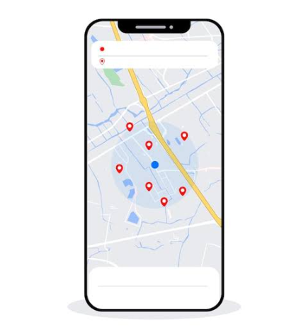

Welcome to CivicAlert
Report civic hazards. Track progress. Make commuting safer.
Reported Hazards
About:
CivicAlert is a platform designed for commuters to report civic hazards and keep track of reported issues. It offers you a complaint form in which you can report any inconvience relevant to your neighbourhood
How to use:
- Report a complaint by submitting a picture, description, and location.
- Reported hazards appear on the Home tab with their available status and location.
- Use the category and status filters, or search by title, description, or location, to find a complaint.
